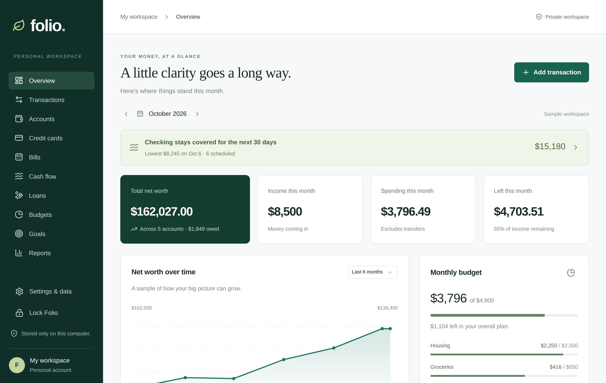
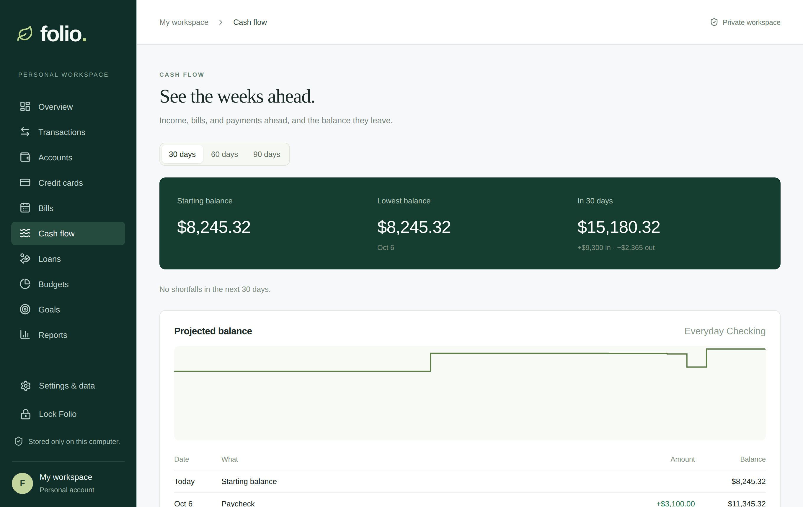
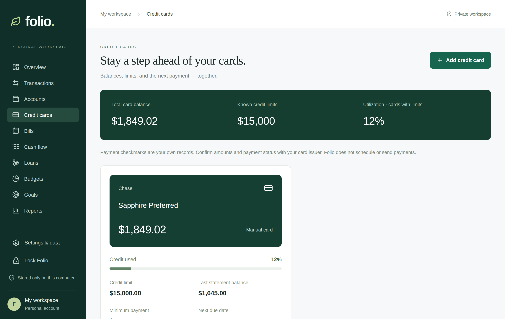
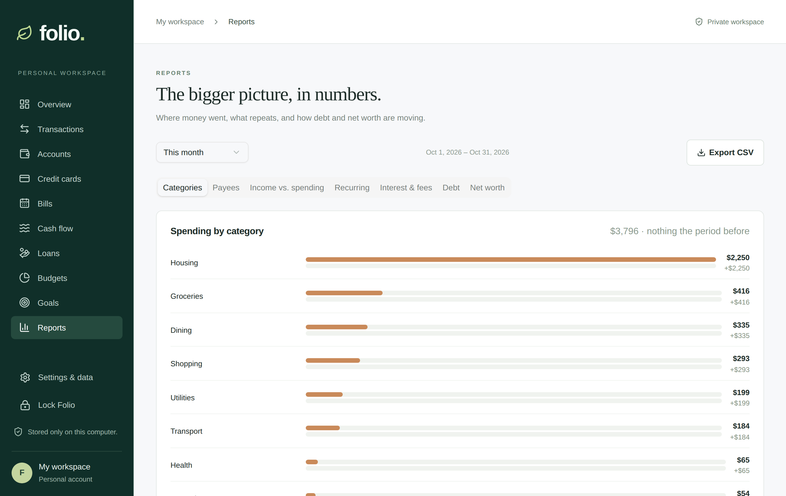

Your money, on your computer.
Folio is a free, open-source personal finance app for macOS and Windows, in the spirit of classic Quicken. Import your bank files, plan your bills, and see where things stand — all in a password-encrypted file that never leaves your computer.
Free and MIT-licensed. No account, no subscription, no tracking.

Everything a household ledger needs
The core works without any bank-data subscription: bring in the files your bank already gives you.
Bank file import
QFX, OFX, QBO and CSV from any bank, with duplicate detection, remembered column settings, and Undo for every import.
Credit card statements
Read balance, limit, APR, minimum payment, due date, and promotional balances straight from statement PDFs, on your computer.
Register and reconcile
Running balances, cleared marks, statement reconciliation, rules, custom categories, splits, transfers, receipts, and refunds.
Bills and cash flow
Bills and paychecks on any schedule, and a 30, 60, or 90-day forecast that warns before your checking balance runs low.
Cards, loans, and BNPL
0% and deferred-interest deadlines with the payment that clears them, and buy-now-pay-later plans and loans with their schedules.
Budgets, goals, reports
Grouped budgets with rollover, goals with earmarked savings, and reports you can export as CSV.
See the weeks ahead
Scheduled income, bills, card payments, and installments become a projected balance, with the lowest point and any shortfall called out before it happens.

Stay a step ahead of your cards
Balances, limits, utilization, due dates, and promotional offers with deadlines and the monthly payment each one needs.

The bigger picture
Spending by category against the period before, top payees, income vs. spending, recurring costs, interest and fees, debt, and net worth.

Private by design
There is no Folio server. Nothing to sign up for, and nothing to breach but the file on your own disk.
Encrypted at rest
Everything lives in one SQLCipher-encrypted file, unlocked with a password only you know. It locks itself when you step away.
No network access
The app's security policy blocks remote connections. Statement PDFs and bank files are read on your computer.
Backups you control
Automatic daily encrypted backups, restore in a click, and a copy to any drive you choose.
Open source
Read every line on GitHub. Folio is MIT-licensed and free to use, change, and share.
Install
Download the installer for your computer from the
latest release: the
.dmg for macOS (Apple Silicon and Intel) or the .exe or
.msi for Windows 10 and 11.
- The installers are not code-signed yet, so your computer will ask before opening them. On macOS, right-click Folio in Applications and choose Open the first time (or allow it in System Settings → Privacy & Security).
- On Windows, choose More info → Run anyway when SmartScreen appears.
- Choose a password for your Folio file. Write it down somewhere safe: there is no way to recover it.
- Explore the sample workspace, then choose Start with my finances and import your first bank file.